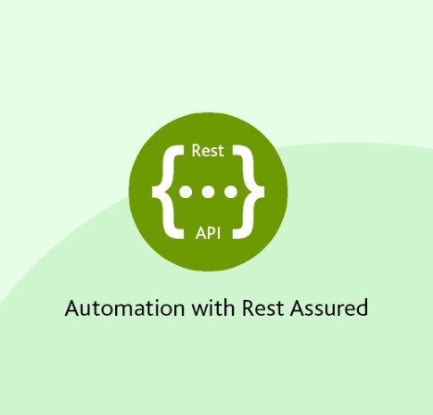

This REST API automation project is developed in Java using the REST Assured libraries. It is structured as a Maven project with TestNG, utilizing a BDD framework. Along with necessary files, framework includes feature files that have detailed test cases, a runner class for test execution, and a property file for necessary configurations. Additionally, it employs parallel test execution and integrates comprehensive logging.

This performance test aims to assess the application's capacity to handle concurrent access by 5,000 users. The testing scope includes evaluating system performance and stability as these users simultaneously attempt to log in. By simulating high-load conditions, we will identify potential bottlenecks and ensure the application's responsiveness and reliability under peak usage. The test will provide critical insights into the application's scalability, helping us to enhance its performance and user experience. This assessment is essential for guaranteeing that our application can efficiently support a large user base without compromising functionality or speed
The primary objective of this assessment was to analyze the security vulnerabilities within Rekall's web applications, networks, and systems. This assessment aimed to identify exploitable weaknesses and offer actionable recommendations to enhance the overall security of the environment.
We utilized our established vulnerability testing methodology to evaluate all relevant web applications, networks, and systems within the scope.